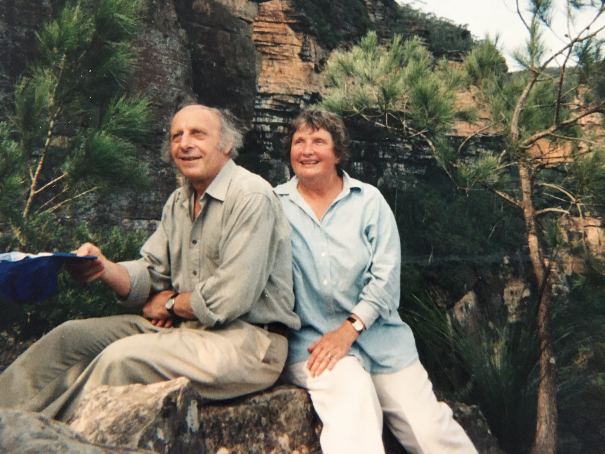

Geoff as I remember himAs many readers will know, Geoff Harcourt one of Australia's distinguished economists died recently aged 90. Geoff was a good friend of my father's who occasionally stayed at our farm where he took off before breakfast every morning to run about 10 ks, up hill and down dale. He was a lovely guy and also perhaps the last of a generation of academics exemplifying and enjoying the golden age of academia as a citadel of ideas — now a distant memory as academics hit their publication, research funding and 'impact' KPIs and get their ethics approvals from careerist and unethical 'ethics' committees.
Tim Harcourt, Geoff's and Joan's son shares with me two distinctions. First we are both half Jewish (Hitler would not be pleased). And we're both that most dismal of scientists — a second-generation economist. In any event, below the fold is Tim's appreciation of his father and following that is Don Russell's appreciation of Geoff. Don is likewise a second-generation economist, son of Eric Russell who was a good friend of Dad. Dad used to say that Eric was way smarter than he was — something he also said of Alan Lloyd.
Here's another piece by Tim, ‘Things you might not know about Geoff’ and one by
Peter Martin (2017) ‘The Two of Us’ Good Weekend Magazine, The Sydney Morning Herald and The Age 2nd December 2017
Geoff Harcourt is survived by wife Joan, children Wendy (& husband Claudio) Rob Tim (& wife Jo) Rebecca, grandchildren, Caterina, Emma Claire, Yunshi, Jhen Huei and Harcourt’s twin brother John.
In any event, on with the show.
Eminent Australian Economist with an international reputation: Geoff Harcourt (27.6.1931 to 7.12.2021)
By Tim Harcourt*
Geoff Harcourt was an Australian economist who split his time between Australia and Cambridge, UK with stints in Toronto, Canada and Tokyo, Japan. He is one of the few Australian economists who built an international reputation on both sides of the Atlantic and increasingly in the Asia Pacific.
Family Origins and upbringing
Geoffrey Colin Harcourt was born in Melbourne in 1931 into a warm hearted secular Jewish family. Harcourt’s paternal grandparents Israel and Dinah Harkowitz had come to Australia from Romania (Transylvania) and Poland in the 19th century and owned a series of General Stores in the New South Wales country supplied by the family paddle steamer ‘the Wandering Jew’ owned by Dinah’s brother Daniel Berger. The Transylvanian heritage often brought remarks of the natural progression of Dracula to Blood Suckers and Economists!
Harcourt’s maternal grandparents Daniel and Edith Gans came from Germany and originally Lithuania (although Edith Isaacs was Australian born and related to Sir Isaac Isaacs the nation’s first Australian born Governor General).
Harcourt’s own father, Kopel Harkowitz and his Uncle Sam, changed the family name from Harkowitz to Harcourt, to get into golf clubs, surf clubs (in Bondi family lore has it they went from the Goldbergs to the Icebergs) and turf clubs (they even had a radio show named after them called ‘The Racing Harcourts’).
Love of Economics
After struggling at school, despite help from a very academic twin brother John Harcourt (who later became an eminent Dental Academic) and cousin Richard (a successful Chemistry academic) Harcourt was a brilliant student at the University of Melbourne in the Commerce Department and at Queens College, (tutored by eminent Labour Economist Joe Isaac). After completing his M.Comm at Melbourne Harcourt won a PhD scholarship to study at Kings College at the University of Cambridge, the College of the world’s most famous economist John Maynard Keynes. Most importantly, he met Joan Bartrop of Ballarat, whom he married straight after graduation before they went to Cambridge. Joan had previously dated playwright Alan Hopgood, author of ‘And the Big Men Fly’ the most famous play on Aussie Rules Football along with ‘The Club’ by David Williamson. It was union that lasted an impressive 66 years.
Harcourt arrived in Cambridge in one of the most successful eras of its legendary Economics Faculty. He immersed himself in ‘Keynes’s Circle’ the students and heirs of Keynes himself, famous economists like Nicholas Kaldor, Richard Kahn, Piero Sraffa, and of course, Harcourt’s hero, Joan Robinson. Harcourt not only become a favourite graduate student of ‘the Circle” and particularly, Joan Robinson, but also made his own contribution in Capital Theory, where he wrote a famous article on the ‘Cambridge Controversies’ between Cambridge, UK and Cambridge, Massachusetts, USA on how capital is measured. This debate went to the heart of the neo-classical economics model and the case for the efficiency of free markets, a theoretical debate that still remains unresolved today.
Harcourt became a leading advocate for the Post-Keynesian school of economics, as a result of his time in the Cambridge circle and his own expertise in capital theory. When the debate about neo-classical economics or ‘economic rationalism’ as it became known in Australia, raged in the early 1990s, Ross Gittins, the legendary Sydney Morning Herald Economics Editor pointed out that Harcourt is:
That rare animal: the left-wing academic who's done his homework. He knows the most effective attack on a school of economic thought is to shake the foundations of its model; to finger the dubious implicit assumptions.
And whilst Economic Theory was his great love, Harcourt was also a good all-rounder in terms of applied economic policy. During the Whitlam Government, some South Australian Economists, Harcourt, Eric Russell and Barry Hughes devised ‘The Adelaide Plan’ that advocated an incomes policy that laid the foundation for the ACTU-ALP Prices and Incomes Accord of the successful Hawke-Keating Labor Government. He also advised ALP Leader Bill Hayden in the Wilderness years of Opposition. The only time he got close to a Government position was when short lived Treasurer Dr Jim Cairns offered him the position of Governor of the Reserve Bank or Secretary of the Treasury. Harcourt recalled that “sitting in the back of a taxi next to Junie Morosi was not the best environment for rational decision making!”
Love of Politics
Harcourt thought economics went hand in hand with political activism. He joined the Australian Labor Party (ALP) in the early 1950s and was once approached to be a candidate in the 1969 Federal Election for the Seat of Sturt (Joan Harcourt had already been a political candidate in the 1968 State Election so he was following in his wife’s footsteps). Harcourt was an activist against the Vietnam War and Conscription working closely with SA Labor figures Peter Duncan, Neal Blewett and Lynn Arnold. Although born Jewish, he once described himself as having Christian Socialist values and then really confused the Adelaide Advertiser by saying that he was the only Jewish Methodist in Adelaide!
Love of Sport
Sport was very close the Harcourt’s heart. And whilst not an elite athlete he made up for it with enthusiasm. The Adelaide University Football Club – the Blacks - was a fixture in our lives in winter and the Adelaide University Cricket Club in summer. Even whilst in Cambridge, Harcourt organised the annual Oxford versus Cambridge Varsity Aussie Rules Football match that at one stage included such notable players as Mike Fitzpatrick, a Rhodes Scholar, Carlton Premiership captain, and later Chairman of the AFL. High Honours Harcourt was awarded the Companion in the Order of Australia (AC) in 2018 for: “Eminent service to higher education as an academic economist and author, particularly in the fields of post-Keynesian economics, capital theory and economic thought” And was made a distinguished member of the Economic Society of Australia. Harcourt had a wonderful life. He reached his production possibility frontier in all aspects life – both professional and personal - and shared his knowledge and love with all. And he was a wonderful father to me. * Written by Tim Harcourt, Industry Professor and Chief Economist, University of Technology Sydney (UTS) and Harcourt’s son.
Geoff Harcourt: A speech by Don Russell on 17 December 2021
My father Eric Russell had the Chair in Economics at the University of Adelaide until he died at the age of 55, almost 45 years ago, playing squash of all things. My father loved Geoff Harcourt. As a kid I grew up surrounded by these energetic, earnest, quick witted, funny people who felt this great compulsion to entertain and make the world a better place. What drove them was a belief in the power of reason and faith that the insights that come from economic theory have the capacity to move the public debate and change the circumstances of people’s lives and the course of nations. Academics were also expected to be inspired teachers. Amongst this group, Geoff Harcourt stood out as a giant. Geoff had sat at the feet of gods at Cambridge, had an international reputation, published in fields of economic theory that hurt your head and resolutely believed that economists should not only be good academics but should also be advocates for change that improved societies. Geoff made the economists I grew up with in Adelaide feel good about themselves and their profession; it was why my father, building on Peter Karmel’s original vision, put so much store in securing a personal Chair for Geoff after he returned from Cambridge in the late 1960s. Geoff was the glue that held people together and was the magnifier who made people’s aspirations grander. Geoff believed firmly in the academic pursuit and was respectful of the different strands of the literature and the academics who championed them, even if those academics bristled at Geoff’s advocacy. It was a battle of ideas and it was the quality of the argument that mattered. I am sure that it was Geoff’s belief in the importance of intellectual inquiry and his respect for other academics that made his survey work not only insightful but highly effective. Some Cambridge Controversies in the Theory of Capital took an arcane part of the literature and made it an important issue because of Geoff’s capacity to do justice to all points of view while at the same time leaving the reader with a wider understanding of the topic. As an honours student at Flinders, I well remember taking Geoff’s course on capital theory, a course that stretched me and my colleagues, but imparted a wisdom that I still find helpful, to better understand measures of productivity, the specification of production functions and the measurement of technological progress. As students, our exploration of Keynes and The General Theory was guided by Harcourt, Karmel & Wallace a fine text book, with Bob Wallace, our actual lecturer, becoming my honour’s thesis supervisor. What was inspirational about that time in Adelaide, was that the families of the economists all hung out together and the bonding and the shared values from that period have carried on inspiring a new generation. Best of all, it has inspired a camaraderie and sense of family and common purpose that has only strengthened over the years. Geoff and Joan were particularly supportive of my mother Judith after my father’s death and the closeness of all the Harcourts, Geoff, Joan, Wendy, Robert, Tim and Becky and their respective families with me and my two brothers Jack and Bill and our families over the years has been a simple delight. We have all appreciated Joan’s determination to become the towering woman she is today and the accomplishments of all of Joan and Geoff’s children. Geoff was so very proud of Joan and all of the children. My recent time back in Adelaide as a Chief Executive of a number of government departments, reminded me yet again of the on going power of those early years. I got more than a quiet sense of satisfaction that Sue Wallace, one of Bob’s daughters, was a representative on the Chief Executives Group on Aboriginal Affairs. Geoff Harcourt inspired generations of students to strive and enjoy the pursuit of theoretical rigour. But he also encouraged them to see that this was all preparation for an end and that was to make the world a better place. This is an important part of Geoff’s legacy. But any reckoning must also include the rich network of family like relationships which span generations. These relationships can be traced back directly to Geoff but they now have a life and strength of their own. They bring support and joy to many but they also honour the man himself. Bless you Geoff. You have enriched us all.
Barkley Rosser and Tyler Cowen both wrote about Geoff. I remember getting his book on the cambridge controversies out a few time until I understood it. My fading memory has him saying something profound on housing in Australia in the 70s. could have the decade wrong.
Thanks Homer
Geoff was entertaining to chat to. He has died and it is poor form to criticise anything about him but accuracy requires some comment. His economics involved much language but less logic. His "Cambridge Controversies" on the reswitching debate didn't - as far as I can see - add much. I did like the jokes - e.g. about T.C. Koopmans explaining the Golden Rule to the Pope! But the critique (and the 50 year odyssey of Sraffa) were not a foundational criticism of "neoclassical economics" whatever the the "left" mean by this. Trevor Swan with his Meccano sets and his aggregated measures of "capital stocks" still make sense. Models with heterogeneous capital goods have been constructed but - guess what - they are complicated.
>" ... a foundational criticism of “neoclassical economics” whatever the the “left” mean by this." Yes. The left, including Harcourt, just make up words to try and win arguments. Things these people don't like, and that's a long list, are clumped under newly minted "isms", such as scientism/darwinism and so on, with no definitional attempts whatsoever. Harcourt did this too. I lived through the 70's, struggling with the grandiosity of Whitlam and the granitic obduracy of Fraser. The concept of theory is abused too. At best the accurate description of ideas the left describe as theory is hypothesis (mostly untestable as there is generally no control), although I prefer notion - so fluid and un-needing of testing.